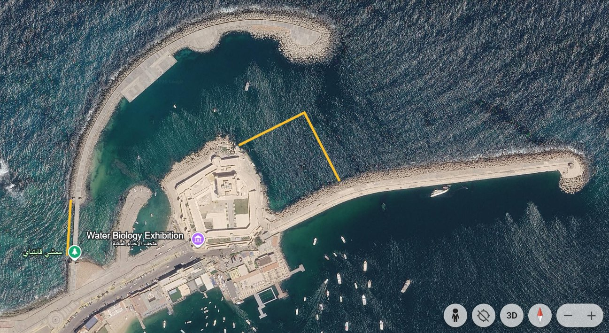
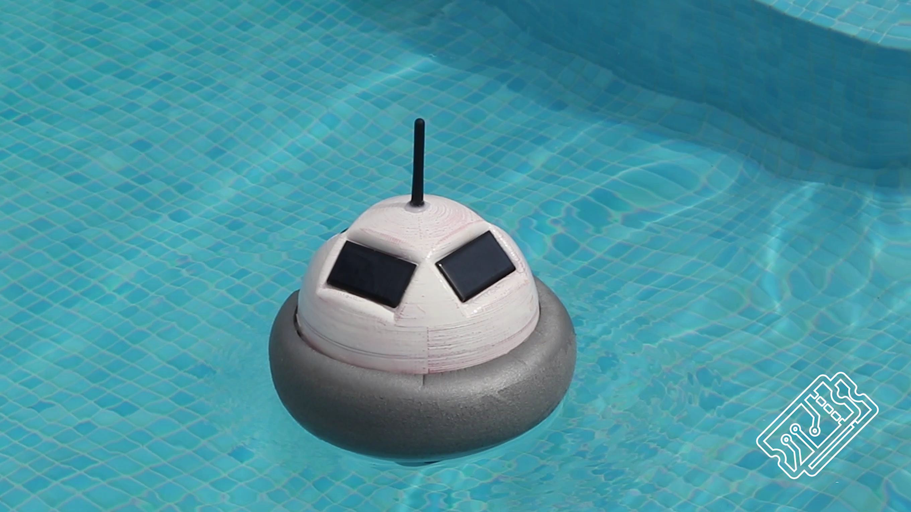
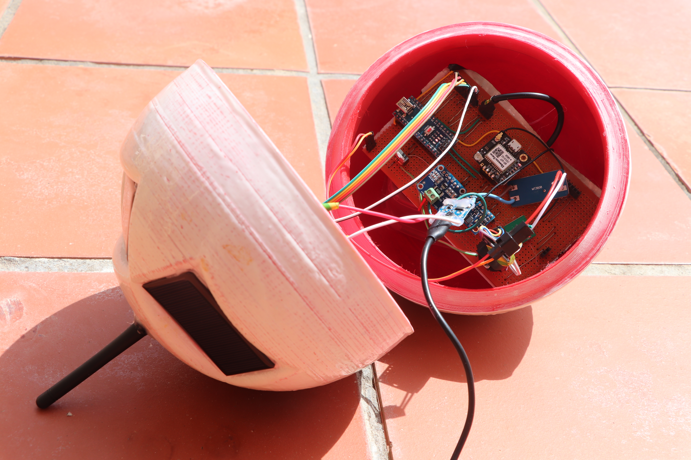
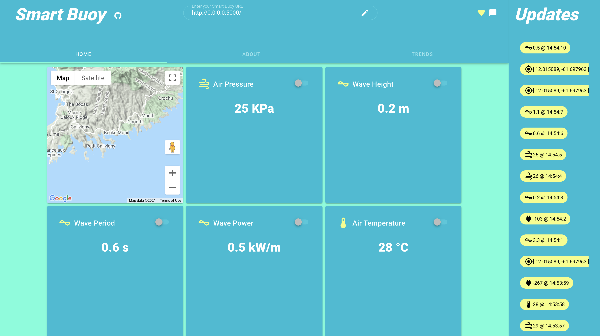
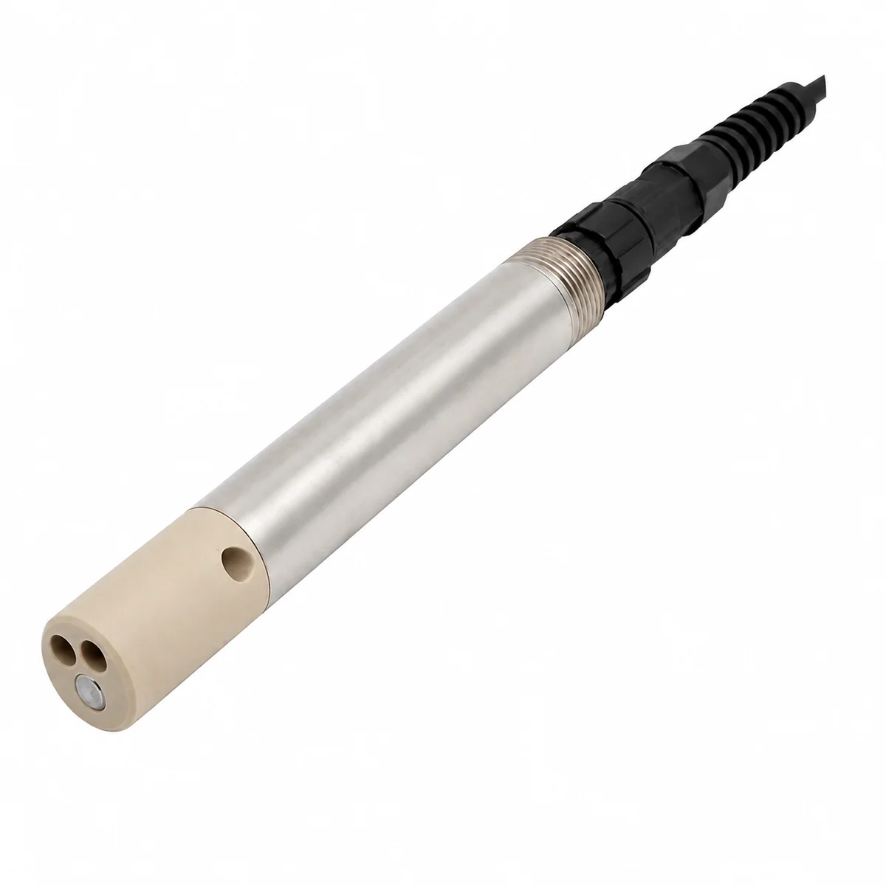
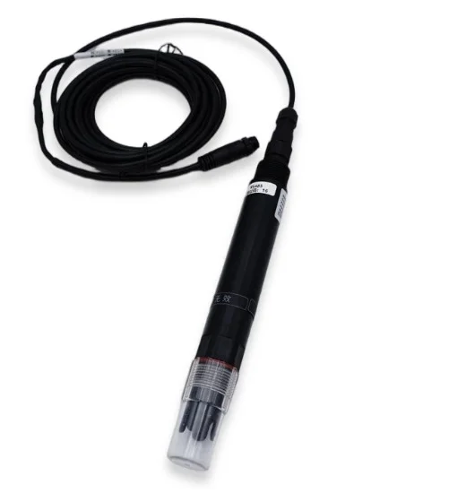
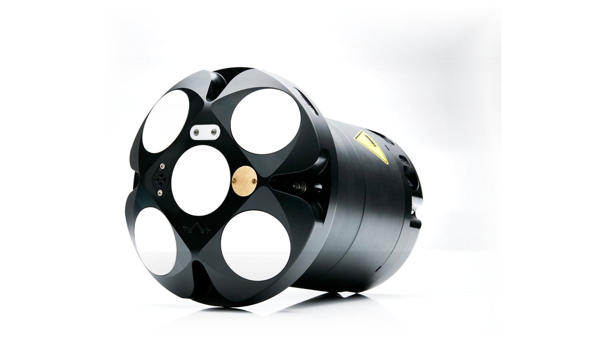
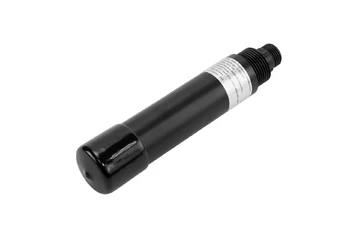
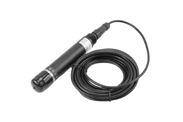

More sedimentation
Weaker waves and a new current direction have increased sedimentation on the site.
A cabled, modular monitoring station that continuously tracks salinity, temperature, depth and water currents around Alexandria's submerged monuments, with all processing kept safely above water.
Earthquakes, soil liquefaction and rising seas drowned parts of ancient Alexandria, Canopus and Thonis-Heracleion. Today their ruins lie along about 30 km of coastline, from Qaitbay Citadel to Abu Qir Bay.
All four sites sit in shallow water, within about 8 m of the surface. That is good news for divers and for cabled sensors, but it also means waves, currents and sediment reach them easily.
Depths and distances: Egyptian Ministry of Tourism & Antiquities (Sunken Monuments). *Eastern Harbour distance is an approximate estimate. The scene is schematic: the horizontal distance axis is compressed so that all four sites fit.
We are building a device that measures the key water properties at the sunken antiquities site next to Qaitbay Citadel, to help preserve the artefacts that lie under the water.
Following the 2001 UNESCO Convention on the Protection of the Underwater Cultural Heritage, we aim to leave the artefacts where they are, while letting Egyptian and foreign visitors dive down to see them. A diving centre already organises visits to the site.
6 months, starting 1 October. A first prototype within 3 months, which can be tested in a swimming pool as part of the project.
The site lies north-east of Qaitbay Citadel, right next to the citadel quay.

Artefact area (approx.) Qaitbay Citadel Breakwater Bridge with two openingsWe believe there may be artefacts under the wave barrier, so the study area starts at the citadel wall and reaches up to 6 m out.
These monuments tie Egypt's story to the wider Mediterranean world, and they are an asset that is still waiting to be shared with visitors.
But they are at risk. Currents, sediment and changing seawater keep reshaping the seabed, and reports citing UN projections say a third of Alexandria could be underwater or unusable by 2050, even in the best case. Alex-Mon exists to watch these sites continuously, without touching them.
An open-source floating station that measures ocean conditions with an Arduino, powers itself from the sun and radios the data to a base station. Alex-Mon borrows its architecture and points it at the seabed instead of the waves.


Source: github.com/sk-t3ch/smart-buoy (T3chFlicks). Photos from the project repository.
A monitoring buoy only works if it rides the waves without tipping over. Watch how the Smart Buoy settles and rights itself on the water.
A broad ring of buoyant foam resists rolling, so the dome stays above the surface.
A low centre of gravity pulls the buoy back upright after each wave. Alex-Mon uses low-positioned ballast for the same reason.
A steady platform keeps the antenna and solar panels up, and limits the pull on the sensor cables below.
Alex-Mon adds an engineered anchor and mooring line: ballast alone does not stop a buoy from drifting off its monitoring area.
The buoy radios its readings to a Raspberry Pi base station, which stores them and serves a web dashboard with real-time values and historical graphs.

Alex-Mon flags concerning environmental changes. It does not claim to diagnose monument damage directly from water measurements.
Alex-Mon reuses the proven parts of the Smart Buoy, upgrades two of them, and adds what an archaeological site needs.
A sealed housing keeps all electronics dry, above the waves.
The sun charges the battery; power use is scheduled to last.
A low-power board reads the sensors and saves the data.
Time-stamped records, a live view and history graphs.
Float ring → ballast plus an anchored mooring that holds position.
Radio or cellular to shore, storing data while offline.
Salinity and current probes on a marine cable.
Nothing touches the ruins; deployment approved by the authorities.
Note: Alex-Mon is an adaptation inspired by the public project. The original hardware has not been validated for underwater sensors or for archaeological-site deployment.
A solar-powered floating unit collects underwater sensor readings and sends them to a remote monitoring dashboard.
What the measurements at Qaitbay should deliver.
Provide the first data about the site, and make it possible to compare the seasons.
Measure the currents after the breakwater was built and their effect on the artefacts: strong currents can scour them.
Measure how much sediment settles on the site.
Find patterns in events that happen at certain times, such as sewage arriving, and report their effect on the artefacts to the authorities.
Use the results later to find a way to weaken the currents.
After the breakwater was built, the waves dropped, the current changed direction and the area became partly enclosed.
Weaker waves and a new current direction have increased sedimentation on the site.
The current direction changed after the breakwater; if the currents are strong they can scour the artefacts.
Egypt's prevailing wind blows from the north-west, from the breakwater side. On the few days with easterly wind from the opening side, the current reverses.
When the area was open, the waves carried waste away. Tourist boats on the site also leave waste behind.
Sewers are sometimes opened far away, with the outlet in El-Wardian 5 – 6 km off, but the sea sometimes carries the pollution to the site.
The water now stays still for long periods and flows less, which can cause pollution and more plant and algae growth than normal.
Six measurements help us describe the seawater conditions around submerged archaeological remains, including how much sediment and pollution reach them.
How salty is the seawater? Tracking changes helps us understand the local marine environment and possible long-term exposure conditions.
How warm is the water? Temperature changes through the seasons and affects how much oxygen and salt the water holds, so it is also needed to correct other sensor readings.
Which way is the water moving? Direction shows how water—and suspended material—moves around the monitoring site.
How fast is the current? Speed helps identify calm periods and stronger flows that may affect sediment movement near the site.
How cloudy is the water? Suspended particles (turbidity, in NTU) show how much sediment is stirred up and may settle on or bury the remains.
How clean is the water? Dissolved oxygen is an early warning: a drop below normal (about 3–15 mg/L here) points to organic pollution or sewage inflow.
The first deployment focuses on these six core variables: salinity, temperature, current direction, water speed, sedimentation (turbidity) and pollution (dissolved oxygen). Additional measurements can be added if the site study requires them.
Prices are supplier prices. Expect the final cost to be about 1.3 – 1.5 × higher after customs and shipping.
| Picture | Sensor | Range | Price (USD) |
|---|---|---|---|
 |
SX-CCFNA ↗SensorsX · Salinity · conductivity | 0.001 – 100 mS/cm 0 – 80 ppt salinity |
$473sensorsx.com |
 |
DR-EC200 ↗Dragino · Salinity · conductivity | 1 – 200,000 µS/cm 0 – 70 PSU salinity |
≈ $375€325.61 at Antratek |
 |
Signature 500 ↗Nortek · Water current | 1 – 5 m/s user-selectable |
~ $5,000average · quote on request |
| Tilt Current Meter ↗DIY build · Water current | Unknown target 0 – 1 m/s |
≈ $200parts estimate | |
 |
SEN0710 ↗DFRobot · Turbidity · sedimentation | 0 – 1000 NTU | $229dfrobot.com |
 |
SEN0681 ↗DFRobot · Dissolved oxygen · pollution | 0 – 20 mg/L | $209dfrobot.com |
A wired conductivity + temperature probe stays underwater while the processor and data logger can remain safely inside the floating buoy.
The underwater probe sends measurements through a marine-rated cable. A controller in the buoy records the readings and can forward them to the monitoring dashboard.
Important: conductivity is not itself a direct salinity reading. Confirm seawater-compatible calculations, temperature compensation and stated accuracy—especially if the project needs to detect small changes over time.
4-electrode conductivity / salinity probe
4-electrode conductivity probe for seawater
The sensor sits on the seabed and "listens" to the water. Tiny particles drift with the current and bounce its sound pings back, and the change in the echo's pitch tells it how fast and which way the water moves.
The sensor sends short pings of sound up into the water along two or more beams.
Particles carried by the current bounce the ping back. Because they are moving, the echo returns at a slightly different pitch, like a passing ambulance siren (the Doppler effect).
A bigger pitch change means faster water. Comparing the beams and a built-in compass gives the direction.
Conceptual illustration of an acoustic Doppler current meter. A rotor-based meter such as EMCON's uses a different velocity-sensing method, paired with a separate direction sensor.
5-beam ADCP profiler · 500 kHz
Tilt-angle current meter (BNO085)
The probe shines an invisible infrared beam through the water. Sediment particles scatter some of that light sideways, and a detector at 90° counts it: the cloudier the water, the more light it sees.
The probe turns the scattered-light signal into an NTU value and sends it, with a temperature reading, over RS485 Modbus to the controller in the buoy.
Note: turbidity is read as relative change. A storm or dredging pulse shows as a jump in NTU; the sensor does not say what the sediment is made of.
RS485 water-quality turbidity sensor
A fluorescence sensor lights a special dye film with blue light and watches the red glow it gives back. Oxygen touching the film switches the glow off faster, so the glow tells us how much oxygen is dissolved.
The probe works out oxygen from the glow, corrected for temperature and the salinity you set, then sends mg/L, % saturation and temperature over RS485 Modbus.
Note: the film does not use up oxygen and needs no stirring, so it suits a still seabed; a slow reading is normal.
RS485 fluorescence dissolved-oxygen sensor (seawater)
The sensors stay underwater on a cable. The buoy has no wire to land, so it sends the readings through the air to shore, and from there over the internet to the dashboard.
Three ways to make the radio link follow: cellular, LoRa and a Wi-Fi / radio link. The readings are tiny, so all three can carry them.
The buoy carries a small modem with a SIM card, like a phone. It sends the readings to the nearest mobile tower, which forwards them over the internet.
Best for ALEX-MON: the first choice for every site. Test the signal on a boat at each site before buying.
A low-power radio built for small messages over long distances. The buoy sends to a LoRa gateway on shore, which is connected to the internet.
Best for ALEX-MON: the backup for Canopus (~2 km) and Heracleion (~6–7 km) if cellular signal is weak.
Two directional antennas aimed at each other, one on the buoy and one on shore, make a private wireless link, like a long Wi-Fi cable through the air.
Best for ALEX-MON: Qaitbay and the Eastern Harbour, which are within about 200 m of the shore.